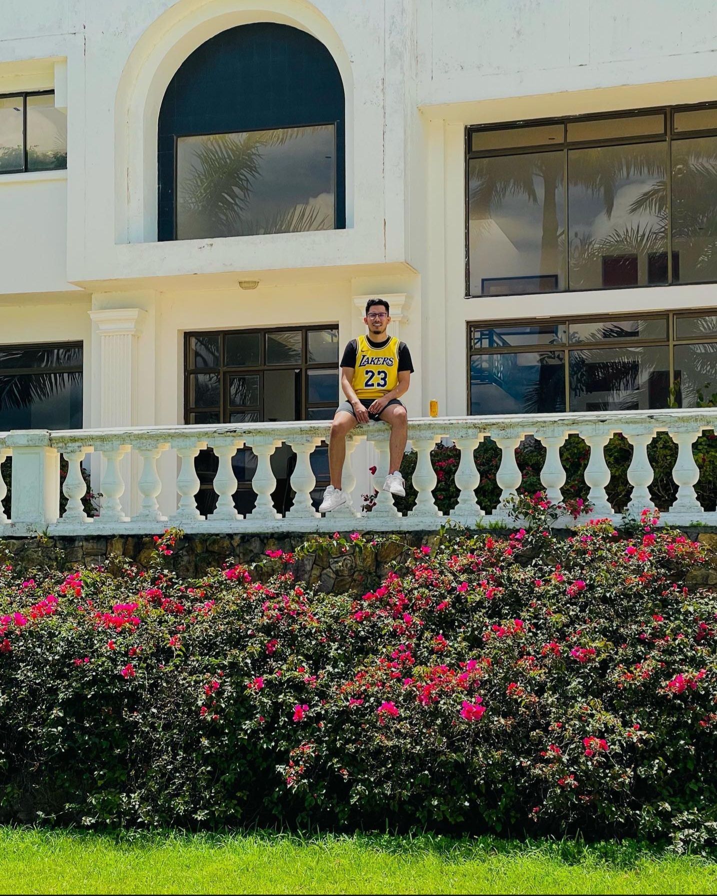

Fabian Vindas
Phone: 404-422-5281
Email: Favinber1998@outlook.com
Address: 1203 Bentley Estates Dr. Dacula, GA 30019
Education
Georgia Gwinnett College
Bachelor of Science in Information Technology
Software Development concentration
GPA: 3.5
Expected Graduation: May 2026
Transferring to University of Georgia in Fall 2025
Bilingual: English and Spanish
Norcross High School
High School Diploma
Graduated: 2017
Work Experience
T-Mobile (Wireless Vision), Lawrenceville, GA
Sales Representative (Nov 2023 – Present)
- Provided tailored solutions to customer inquiries regarding wireless plans and devices.
- Demonstrated expertise in troubleshooting smartphones and assisting customers with setup.
- Consistently exceeded sales targets.
Amazon, Buford, GA
Dispatcher and Driver (Sep 2020 – Aug 2023)
- Coordinated timely deliveries and optimized logistics.
- Provided real-time problem-solving for delivery issues.
- Maintained clear communication with drivers.
Fogo de Chao, Atlanta, GA
Server (Sep 2016 – Aug 2019)
- Delivered high-quality dining experiences and met all sales goals.
- Maintained exceptional service standards.
The Buckhead Club, Atlanta, GA
Bartender (Oct 2016 – May 2018)
- Crafted cocktails and engaged with guests to enhance experience.
- Ensured efficient bar operations and achieved sales targets.
Technical Skills
- Programming: Fundamental knowledge of Java
- Troubleshooting: Skilled with smartphones, tablets, and computers
- Systems: Proficient in Windows (7–11), macOS, iOS, Android
- Hardware: Familiar with computer parts and their functions
- Software: Microsoft Office Suite, Adobe Photoshop, Illustrator, Premiere Pro, Audition
- Technical research and communication skills
Major Projects
Scientific Calculator – ITEC 2140 Programming Fundamentals
Developed a fully functional scientific calculator in Java as part of coursework in Programming Fundamentals.
Image Editing Project – ITEC 2110 Digital Media
Used Adobe Photoshop to modify and enhance images for digital media assignments, applying various tools and techniques.
Major Courses Taken
- ITEC 1001 – Introduction to Computing
- ITEC 2140 – Programming Fundamentals (Java)
- ITEC 2110 – Digital Media
- MATH 2300 – Discrete Mathematics
- ITEC 2130 – Web Technologies